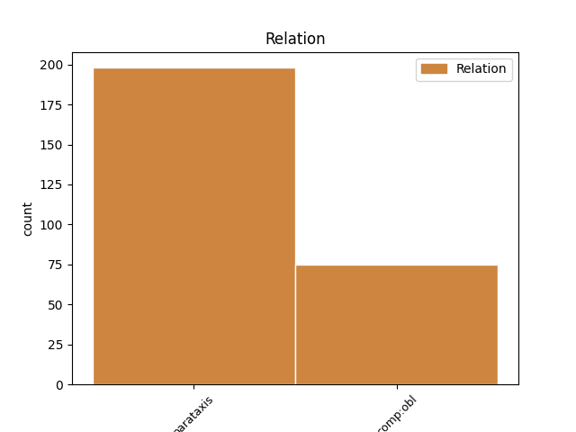
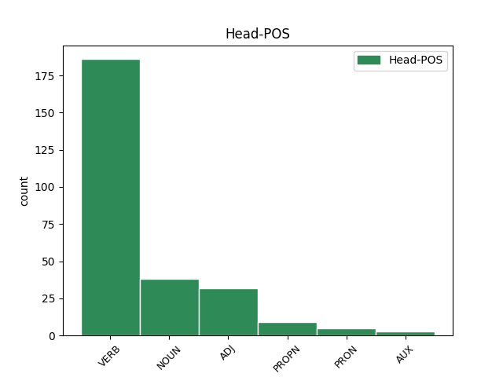
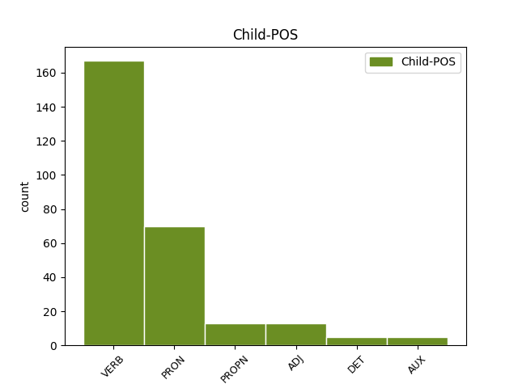

Distribution of features within this leaf



Agreement Rules sorted by frequency.
- When the dependent token is the parataxis(parataxis) of the head token, and the dependent token is VERB.
1 " _ _ _ _ 0 _ _ _
2 Давай давать VERB _ Aspect=Imp|Mood=Imp|Number=Sing|Person=2|VerbForm=Fin|Voice=Act 0 _ _ _
3 " _ _ _ _ 0 _ _ _
4 - _ _ _ _ 0 _ _ _
5 соглашается _ _ _ _ 0 _ _ _
6 Кира _ _ _ _ 0 _ _ _
7 , _ _ _ _ 0 _ _ _
8 - _ _ _ _ 0 _ _ _
9 " _ _ _ _ 0 _ _ _
10 а _ _ _ _ 0 _ _ _
11 я _ _ _ _ 0 _ _ _
12 это _ _ _ _ 0 _ _ _
13 сфотографирую сфотографировать VERB _ Aspect=Imp|Mood=Ind|Number=Sing|Person=1|Tense=Pres|VerbForm=Fin|Voice=Act 2 parataxis _ _
14 и _ _ _ _ 0 _ _ _
15 продам _ _ _ _ 0 _ _ _
16 в _ _ _ _ 0 _ _ _
17 журнал _ _ _ _ 0 _ _ _
18 " _ _ _ _ 0 _ _ _
19 ОК _ _ _ _ 0 _ _ _
20 ! _ _ _ _ 0 _ _ _
21 " _ _ _ _ 0 _ _ _
22 " _ _ _ _ 0 _ _ _
23 . _ _ _ _ 0 _ _ _
1 Ведь _ _ _ _ 0 _ _ _
2 Цыганов _ _ _ _ 0 _ _ _
3 мне я PRON _ Case=Dat|Number=Sing|Person=1 5 comp:obl _ _
4 так _ _ _ _ 0 _ _ _
5 нравится нравиться VERB _ Aspect=Imp|Mood=Ind|Number=Sing|Person=3|Tense=Pres|VerbForm=Fin|Voice=Mid 0 _ _ _
6 , _ _ _ _ 0 _ _ _
7 он _ _ _ _ 0 _ _ _
8 мрачный _ _ _ _ 0 _ _ _
9 , _ _ _ _ 0 _ _ _
10 гипермногодетный _ _ _ _ 0 _ _ _
11 , _ _ _ _ 0 _ _ _
12 и _ _ _ _ 0 _ _ _
13 то _ _ _ _ 0 _ _ _
14 ли _ _ _ _ 0 _ _ _
15 подлец _ _ _ _ 0 _ _ _
16 , _ _ _ _ 0 _ _ _
17 то _ _ _ _ 0 _ _ _
18 ли _ _ _ _ 0 _ _ _
19 просто _ _ _ _ 0 _ _ _
20 бабник _ _ _ _ 0 _ _ _
21 . _ _ _ _ 0 _ _ _
1 Французы _ _ _ _ 0 _ _ _
2 , _ _ _ _ 0 _ _ _
3 которые _ _ _ _ 0 _ _ _
4 были _ _ _ _ 0 _ _ _
5 у _ _ _ _ 0 _ _ _
6 Саши _ _ _ _ 0 _ _ _
7 на _ _ _ _ 0 _ _ _
8 радио _ _ _ _ 0 _ _ _
9 за _ _ _ _ 0 _ _ _
10 день _ _ _ _ 0 _ _ _
11 до _ _ _ _ 0 _ _ _
12 , _ _ _ _ 0 _ _ _
13 скачут скачать VERB _ Aspect=Perf|Mood=Ind|Number=Plur|Person=3|Tense=Fut|VerbForm=Fin|Voice=Act 0 _ _ _
14 козлами _ _ _ _ 0 _ _ _
15 по _ _ _ _ 0 _ _ _
16 сцене _ _ _ _ 0 _ _ _
17 , _ _ _ _ 0 _ _ _
18 машут _ _ _ _ 0 _ _ _
19 седыми _ _ _ _ 0 _ _ _
20 дредами _ _ _ _ 0 _ _ _
21 - _ _ _ _ 0 _ _ _
22 не _ _ _ _ 0 _ _ _
23 юные юный ADJ _ Case=Nom|Degree=Pos|Number=Plur 13 parataxis _ SpaceAfter=No
24 , _ _ _ _ 0 _ _ _
25 но _ _ _ _ 0 _ _ _
26 до _ _ _ _ 0 _ _ _
27 чего _ _ _ _ 0 _ _ _
28 же _ _ _ _ 0 _ _ _
29 бодрые _ _ _ _ 0 _ _ _
30 ! _ _ _ _ 0 _ _ _
1 и _ _ _ _ 0 _ _ _
2 на _ _ _ _ 0 _ _ _
3 нероновом _ _ _ _ 0 _ _ _
4 плече _ _ _ _ 0 _ _ _
5 уж _ _ _ _ 0 _ _ _
6 головка _ _ _ _ 0 _ _ _
7 её _ _ _ _ 0 _ _ _
8 болталась болтаться VERB VERB Aspect=Imp|Gender=Fem|Mood=Ind|Number=Sing|Tense=Past|VerbForm=Fin|Voice=Mid 0 _ _ _
9 она она PRON PRON Case=Nom|Gender=Fem|Number=Sing|Person=3 8 parataxis _ _
10 козлёнком _ _ _ _ 0 _ _ _
1 У _ _ _ _ 0 _ _ _
2 Революции _ _ _ _ 0 _ _ _
3 в _ _ _ _ 0 _ _ _
4 глазах _ _ _ _ 0 _ _ _
5 читаю читать VERB VERB Aspect=Imp|Mood=Ind|Number=Sing|Person=1|Tense=Pres|VerbForm=Fin|Voice=Act 0 _ _ _
6 синих _ _ _ _ 0 _ _ _
7 Необходимость _ _ _ _ 0 _ _ _
8 беспощадных _ _ _ _ 0 _ _ _
9 мер _ _ _ _ 0 _ _ _
10 СССР СССР PROPN NOUN Animacy=Inan|Case=Gen|Gender=Masc|Number=Sing 5 parataxis _ _
11 [ _ _ _ _ 0 _ _ _
12 эсесесер _ _ _ _ 0 _ _ _
13 ] _ _ _ _ 0 _ _ _
14 СССР _ _ _ _ 0 _ _ _
15 [ _ _ _ _ 0 _ _ _
16 эсесесер _ _ _ _ 0 _ _ _
17 ] _ _ _ _ 0 _ _ _
18 СССР _ _ _ _ 0 _ _ _
19 [ _ _ _ _ 0 _ _ _
20 эсесесер _ _ _ _ 0 _ _ _
21 ] _ _ _ _ 0 _ _ _
22 СССР _ _ _ _ 0 _ _ _
23 [ _ _ _ _ 0 _ _ _
24 эсесесер _ _ _ _ 0 _ _ _
25 ] _ _ _ _ 0 _ _ _
26 . _ _ _ _ 0 _ _ _
1 кто _ _ _ _ 0 _ _ _
2 упал _ _ _ _ 0 _ _ _
3 на _ _ _ _ 0 _ _ _
4 дно _ _ _ _ 0 _ _ _
5 морское _ _ _ _ 0 _ _ _
6 корабельною _ _ _ _ 0 _ _ _
7 доскою _ _ _ _ 0 _ _ _
8 тот _ _ _ _ 0 _ _ _
9 наполнился _ _ _ _ 0 _ _ _
10 тоскою _ _ _ _ 0 _ _ _
11 зубом _ _ _ _ 0 _ _ _
12 мудрости _ _ _ _ 0 _ _ _
13 стучит _ _ _ _ 0 _ _ _
14 кто _ _ _ _ 0 _ _ _
15 на _ _ _ _ 0 _ _ _
16 водоросли _ _ _ _ 0 _ _ _
17 тусклой _ _ _ _ 0 _ _ _
18 постирать _ _ _ _ 0 _ _ _
19 повесил _ _ _ _ 0 _ _ _
20 мускул _ _ _ _ 0 _ _ _
21 и _ _ _ _ 0 _ _ _
22 мигает _ _ _ _ 0 _ _ _
23 как _ _ _ _ 0 _ _ _
24 луна _ _ _ _ 0 _ _ _
25 когда _ _ _ _ 0 _ _ _
26 колышется _ _ _ _ 0 _ _ _
27 волна _ _ _ _ 0 _ _ _
28 кто _ _ _ _ 0 _ _ _
29 сказал сказать VERB VERB Aspect=Perf|Gender=Masc|Mood=Ind|Number=Sing|Tense=Past|VerbForm=Fin|Voice=Act 0 _ _ _
30 морское _ _ _ _ 0 _ _ _
31 дно _ _ _ _ 0 _ _ _
32 и _ _ _ _ 0 _ _ _
33 моя _ _ _ _ 0 _ _ _
34 нога _ _ _ _ 0 _ _ _
35 одно один DET ADJ Case=Nom|Gender=Neut|Number=Sing 29 parataxis _ _
1 Творения _ _ _ _ 0 _ _ _
2 твои _ _ _ _ 0 _ _ _
3 для _ _ _ _ 0 _ _ _
4 них _ _ _ _ 0 _ _ _
5 тяжелый _ _ _ _ 0 _ _ _
6 бич бич NOUN _ Animacy=Inan|Case=Nom|Gender=Masc|Number=Sing 0 _ _ _
7 , _ _ _ _ 0 _ _ _
8 Нибуром _ _ _ _ 0 _ _ _
9 никогда _ _ _ _ 0 _ _ _
10 не _ _ _ _ 0 _ _ _
11 будет быть AUX _ Aspect=Imp|Mood=Ind|Number=Sing|Person=3|Tense=Pres|VerbForm=Fin|Voice=Act 6 parataxis _ _
12 наш _ _ _ _ 0 _ _ _
13 москвич _ _ _ _ 0 _ _ _
14 , _ _ _ _ 0 _ _ _
15 И _ _ _ _ 0 _ _ _
16 автор _ _ _ _ 0 _ _ _
17 повести _ _ _ _ 0 _ _ _
18 топорныя _ _ _ _ 0 _ _ _
19 работы _ _ _ _ 0 _ _ _
20 Не _ _ _ _ 0 _ _ _
21 может _ _ _ _ 0 _ _ _
22 , _ _ _ _ 0 _ _ _
23 кажется _ _ _ _ 0 _ _ _
24 , _ _ _ _ 0 _ _ _
25 проситься _ _ _ _ 0 _ _ _
26 в _ _ _ _ 0 _ _ _
27 Вальтер _ _ _ _ 0 _ _ _
28 Скотты _ _ _ _ 0 _ _ _
29 . _ _ _ _ 0 _ _ _
1 Рассказала рассказать VERB VERB Aspect=Perf|Gender=Fem|Mood=Ind|Number=Sing|Tense=Past|VerbForm=Fin|Voice=Act 0 _ _ _
2 свой _ _ _ _ 0 _ _ _
3 сон _ _ _ _ 0 _ _ _
4 Сафо _ _ _ _ 0 _ _ _
5 Киприде Киприда PROPN NOUN Animacy=Anim|Case=Dat|Gender=Fem|Number=Sing 1 comp:obl _ _
1 Шепчут _ _ _ _ 0 _ _ _
2 деревья _ _ _ _ 0 _ _ _
3 над _ _ _ _ 0 _ _ _
4 юртами _ _ _ _ 0 _ _ _
5 , _ _ _ _ 0 _ _ _
6 Стража _ _ _ _ 0 _ _ _
7 окликает _ _ _ _ 0 _ _ _
8 страж _ _ _ _ 0 _ _ _
9 , _ _ _ _ 0 _ _ _
10 -- _ _ _ _ 0 _ _ _
11 Вещий _ _ _ _ 0 _ _ _
12 голос _ _ _ _ 0 _ _ _
13 сонным сонный ADJ _ Case=Dat|Degree=Pos|Gender=Masc|Number=Sing 14 comp:obl _ _
14 слышится слышаться VERB _ Aspect=Imp|Mood=Ind|Number=Sing|Person=3|Tense=Pres|VerbForm=Fin|Voice=Mid 0 _ _ _
15 С _ _ _ _ 0 _ _ _
16 родины _ _ _ _ 0 _ _ _
17 святой _ _ _ _ 0 _ _ _
18 . _ _ _ _ 0 _ _ _
Disagree Examples:
1 И _ _ _ _ 0 _ _ _
2 как _ _ _ _ 0 _ _ _
3 же _ _ _ _ 0 _ _ _
4 больно больной ADJ _ Degree=Pos|Gender=Neut|Number=Sing|Variant=Short 0 _ _ _
5 было _ _ _ _ 0 _ _ _
6 нам мы PRON _ Case=Dat|Number=Plur|Person=1 4 comp:obl _ SpaceAfter=No
7 , _ _ _ _ 0 _ _ _
1 Также _ _ _ _ 0 _ _ _
2 СРОЧНО _ _ _ _ 0 _ _ _
3 отправляйте отправлять VERB _ Aspect=Imp|Mood=Imp|Number=Plur|Person=2|VerbForm=Fin|Voice=Act 0 _ _ _
4 текст _ _ _ _ 0 _ _ _
5 ВКР _ _ _ _ 0 _ _ _
6 на _ _ _ _ 0 _ _ _
7 нормоконтроль _ _ _ _ 0 _ _ _
8 Балеевой Балеева PROPN _ Animacy=Anim|Case=Dat|Gender=Fem|Number=Sing 3 comp:obl _ _
9 Светлане _ _ _ _ 0 _ _ _
10 Вениаминовне _ _ _ _ 0 _ _ _
11 по _ _ _ _ 0 _ _ _
12 электронной _ _ _ _ 0 _ _ _
13 почте _ _ _ _ 0 _ _ _
14 ! _ _ _ _ 0 _ _ _
1 Ты _ _ _ _ 0 _ _ _
2 шахтер _ _ _ _ 0 _ _ _
3 , _ _ _ _ 0 _ _ _
4 упавший _ _ _ _ 0 _ _ _
5 с _ _ _ _ 0 _ _ _
6 кайлом _ _ _ _ 0 _ _ _
7 в _ _ _ _ 0 _ _ _
8 руке _ _ _ _ 0 _ _ _
9 , _ _ _ _ 0 _ _ _
10 ты _ _ _ _ 0 _ _ _
11 — _ _ _ _ 0 _ _ _
12 дитя _ _ _ _ 0 _ _ _
13 , _ _ _ _ 0 _ _ _
14 что _ _ _ _ 0 _ _ _
15 всем все PRON _ Animacy=Anim|Case=Dat|Number=Plur 19 comp:obl _ _
16 — _ _ _ _ 0 _ _ _
17 ни _ _ _ _ 0 _ _ _
18 к _ _ _ _ 0 _ _ _
19 чему что PRON _ Animacy=Inan|Case=Dat|Gender=Neut|Number=Sing 0 _ _ _
20 , _ _ _ _ 0 _ _ _
21 Ты _ _ _ _ 0 _ _ _
22 дурак _ _ _ _ 0 _ _ _
23 , _ _ _ _ 0 _ _ _
24 поднявший _ _ _ _ 0 _ _ _
25 в _ _ _ _ 0 _ _ _
26 чужом _ _ _ _ 0 _ _ _
27 платке _ _ _ _ 0 _ _ _
28 ослепительную _ _ _ _ 0 _ _ _
29 чуму _ _ _ _ 0 _ _ _
30 . _ _ _ _ 0 _ _ _
1 Без _ _ _ _ 0 _ _ _
2 тебя _ _ _ _ 0 _ _ _
3 им они PRON _ Case=Dat|Number=Plur|Person=3 4 comp:obl _ _
4 некого некого VERB _ Case=Gen|Gender=Neut|Number=Sing 0 _ _ _
5 будет _ _ _ _ 0 _ _ _
6 есть _ _ _ _ 0 _ _ _
7 , _ _ _ _ 0 _ _ _
8 презирать _ _ _ _ 0 _ _ _
9 и _ _ _ _ 0 _ _ _
10 клясть _ _ _ _ 0 _ _ _
11 до _ _ _ _ 0 _ _ _
12 зари _ _ _ _ 0 _ _ _
13 . _ _ _ _ 0 _ _ _
1 Так _ _ _ _ 0 _ _ _
2 отдай отдать VERB _ Aspect=Perf|Mood=Imp|Number=Sing|Person=2|VerbForm=Fin|Voice=Act 0 _ _ _
3 им они PRON _ Case=Dat|Number=Plur|Person=3 2 comp:obl _ _
4 жизнь _ _ _ _ 0 _ _ _
5 , _ _ _ _ 0 _ _ _
6 не _ _ _ _ 0 _ _ _
7 держись _ _ _ _ 0 _ _ _
8 , _ _ _ _ 0 _ _ _
9 не _ _ _ _ 0 _ _ _
10 жмись _ _ _ _ 0 _ _ _
11 , _ _ _ _ 0 _ _ _
12 не _ _ _ _ 0 _ _ _
13 страшись _ _ _ _ 0 _ _ _
14 ножа _ _ _ _ 0 _ _ _
15 , _ _ _ _ 0 _ _ _
16 топора _ _ _ _ 0 _ _ _
17 ! _ _ _ _ 0 _ _ _